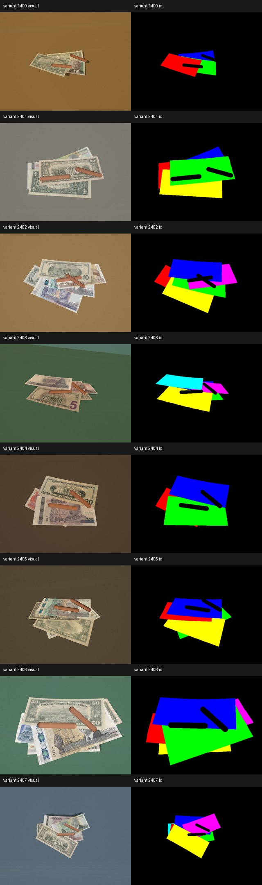
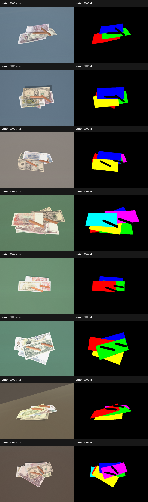

CashSnap
Khmer Riel & US Dollar Cash Counting Assistant
AI-Assisted Computer Vision App | Course Assignment Submission
Target: Overlapped, Fanned, and Occluded Banknotes in Retail
Target: Overlapped, Fanned, and Occluded Banknotes in Retail
The Problem: Cash Counting is Not Simple Detection
- Standard object detection model setups expect **clean, isolated** banknotes on flat, plain backgrounds.
- In actual retail counter layouts (e.g. wet markets), banknotes are **overlapped, fanned, or held**.
- When banknotes are fanned or overlapping, a single physical note is split into **multiple visual fragments**.
- Naive detection counting will count each fragment as a distinct bill, leading to **severe overcounting**.
- Solving this spatial problem requires a custom **two-stage pipeline combined with fragment fusion**.
Hard Real-World Cases Handled
- Overlapped Bills: Partial note visibility and visual obstructions.
- Fanned Stacks: Banks layered closely where only thin border edges are visible.
- Hand Occlusions: Fingers block banknote features during counter placement.
- Circulation Wear: Crinkled, wet, or dirty notes common in circulation.
- Distractor Negatives: Preventing wallets, empty tables, or papers from triggering counts.
Core App Features (PRD)
- Camera & File Input: Capture cash via webcam or upload pre-saved images.
- Image Preview & Retake: Double-check image framing and crop alignment.
- Banknote Detection & Denomination Rec.: Locates boundaries and labels KHR/USD notes.
- NMS Fragment Fusion: Fuses overlapping fragment proposals back into physical note counts.
- Counting & Multi-Currency Totals: Aggregates sums separately by currency (USD/KHR).
- Warning Alerts: Triggers warning messages for low-confidence detections, prompting user adjustments.
End-to-End User Journey
- User opens the CashSnap app in their phone browser.
- Chooses between Camera Capture or File Upload.
- Displays preview, user clicks "Analyze Cash".
- App sends image bytes securely to Hugging Face API or local ONNX runtime.
- AI model proposes boxes; system merges fragments based on IoU overlap.
- App displays visual boxes, denomination breakdowns, and final totals.
- User downloads CSV history or starts a new layout scan.
BPMN Flow: Camera to Result
- User Lane: Controls camera previews, file selections, and handles crop confirmation.
- System Lane: Queries Hugging Face API, runs detectors, triggers fragment checks, and aggregates counts.
- Evidence Gate: Verifies if enough denomination evidence exists, flagging warnings on low confidence.
Hugging Face API & Pipeline Logic
- Preprocessing: Resize image to 416x416 input size and normalize pixel arrays.
- YOLO Detector Stage: Proposes rotated or bounding boxes for visible note regions.
- MobileNetV3 Classifier Stage: Crops low-confidence boxes and overrides denominations.
- NMS Fragment Fusion: Joins boxes overlapping above a 0.85 IoU threshold.
- Local ONNX Mode: Fully offline execution running models directly on CPU via Streamlit.

Synthetic Data Engine (WebGL Renderer)
- Pre-training scaling: Hand-labeled real overlap datasets are costly and scarce.
- WebGL Canvas: Exports pixel-perfect RGB passes, ID masks, and parent note count metadata.
- Note Conditions: Simulates circulated wear (creasing, wet glossiness, speckles).
- Lighting reviews: Environmental reflections verified using Poly Haven HDRI maps.
- Fragment labels: Binds fragmented visual islands back to their physical parents.

WebGL Synthetic Data Pipeline Validation
- Note Condition randomizations: Verification of creasing and wetness levels.
- HD variants: High-resolution visual prints.
- Poly Haven Environment reviews: Ensuring surface specular highlights look realistic under retail lighting.

Limitations & Next Steps
- Clean note detection is mature, but fanned and overlapping note counting remains the core bottleneck.
- Synthetic data is strong, but **real fan/overlap/hand stress validation** is still the next major proof step.
- Requires phone captures of mixed layout stress sets to validate fragment fusion precision in production.
- CC0 environmental HDRI banks require registry verification to check reflection realism.
- Disclaimer: App counts cash assistance only. Counterfeit detection is out of scope.
Slide 1 of 10